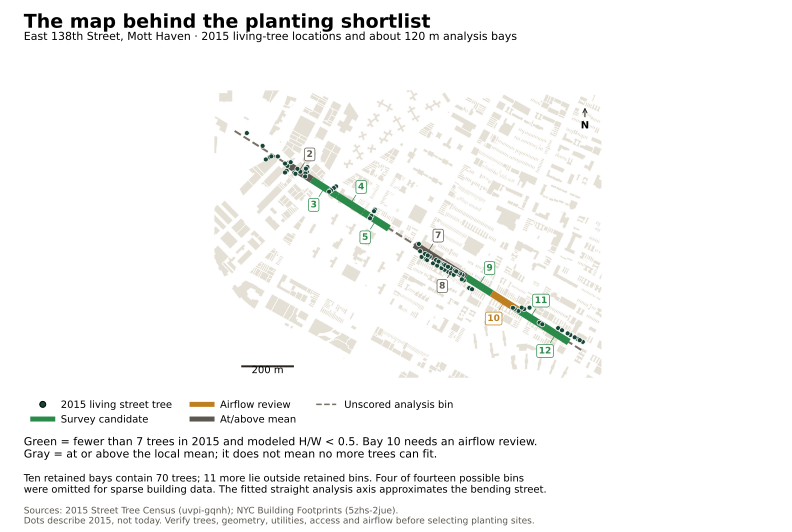

Outside the Line · Datathon 2026
How we worked it out, from the headline to the plan
This is the whole thing start to finish, in the order we figured it out. Each step starts with Cody and Daniel talking it over, then a “kid version” in one line, then the charts, calculations and limits behind it. The nerdy details are still there if you want them. The data list is at the very bottom.
The whole story in six lines
Question. Fraser et al. estimated 22% lower daily-maximum PM2.5 inside Manhattan’s paid zone than under a no-fee model. A separate South Bronx study reported increases in adjusted hourly PM2.5. These are different metrics and study designs.
Traffic check. Our four-crossing MTA comparison found no clear relative increase. A separate official appendix estimates Deegan traffic down 0.94%, 2024–2025. Neither identifies emissions at community sensors.
Other explanations. Global warming, wildfire smoke and weather can affect pollution. Houston’s annual PM2.5 fell, but one monitor cannot rule out those explanations for New York. The public South Bronx abstract does not locate its maximum monitor.
Planning question. We use street geometry, neighborhood vulnerability and tree gaps to prioritize interventions. A ranking is a planning index, not a measurement of each block’s PM2.5.
Near term. Explore trees and rain gardens on suitable blocks, with site checks.
Long term. Explore a narrow park above the Deegan, taking Klyde Warren Park as a precedent. The 3D model illustrates assumed dimensions, pending a site survey.
Step 1 of 7 · The question
A study estimated cleaner air in the paid zone. What happened in the South Bronx?
Congestion pricing began on January 5, 2025, with cleaner air among its expected benefits. Fraser and colleagues estimated 22% lower daily-maximum PM2.5 inside the paid zone than under their no-fee model during the first six months. A separate South Bronx study estimated increases in hourly PM2.5, reaching +1.29 µg/m³ near an expressway.
Image purpose: The Deegan photo shows why we focus on this neighborhood: highway traffic runs close to homes. It does not measure pollution or identify the monitor with the +1.29 estimate.
What the units mean
PM2.5 means airborne particles generally 2.5 micrometers or smaller, small enough to reach deep into the lungs. We measure their concentration in micrograms per cubic meter, written µg/m³. A microgram is one millionth of a gram; a cubic meter is a cube of air one meter on each side. Higher µg/m³ means more particle mass in the same volume of air. The 2.5 describes particle size; µg/m³ describes how much is in the air.
Where was PM2.5 22% lower?
The study is A first look into congestion pricing in the United States: PM2.5 impacts after six months of New York City cordon pricing, by Timothy Fraser and colleagues (npj Clean Air, 2025). Inside Manhattan's Congestion Relief Zone, at or below 60th Street, it estimated a 3.05 µg/m³ reduction from a modeled no-fee concentration of 13.8 µg/m³: 3.05 ÷ 13.8 × 100 ≈ 22%. This is lower than a prediction of what would have happened without pricing, not a simple 2024-to-2025 drop. The paper also analyzed the five boroughs and metro area; it wasn't limited to the zone.
Which source covers the South Bronx?
We use published results from South Bronx Unite's community-managed air sensor network, analyzed in Impacts of New York City's Congestion Pricing Policy on PM2.5 in the South Bronx: Evidence from a Community-Managed Air Sensor Network, led by Alexander De Jesus with Columbia, Brown and CU Boulder. Its public 2026 abstract compares hourly readings from 19 monitors across January 2024–December 2025. The models adjust for seasonality, temperature, humidity, wind and residential heating. The estimated network-wide step increase was +0.22 µg/m³; the largest highway-adjacent estimate was +1.29 µg/m³. The study was undergoing peer review when these results were released.
Why does +1.29 matter?
It is about 5.9 times the network's estimated +0.22 µg/m³ increase. Its reported 95% uncertainty interval, +0.85 to +1.70 µg/m³, stays above zero, so the authors describe it as statistically significant. That makes it a local warning worth investigating, without establishing diverted traffic as the cause. It is not a 1.29% increase. The abstract doesn't publish that monitor's reference concentration, so we cannot calculate a supported percentage or directly compare it with the 22% result: the studies use different time periods, metrics and models.
What we set out to answer
- Did drivers dodge the fee by cutting through the Bronx?
- What could explain the South Bronx increases?
- What can the city do about it, now and later?
Sources
- Fraser et al. (2025), npj Clean Air 1:39, doi 10.1038/s44407-025-00037-2. Daily-maximum PM2.5, modeled no-fee comparison, first six months of 2025. The 22% applies to six monitors inside the zone; the full study includes 42 monitors across the metro area.
- De Jesus et al. (2026), public abstract hosted by South Bronx Unite. Generalized additive mixed models of hourly PM2.5, January 2024–December 2025; 19 of a 65-monitor network analyzed. Overall step estimate +0.22 µg/m³, 95% interval +0.12 to +0.32; maximum +1.29, interval +0.85 to +1.70. Four monitors had significant increases, two significant decreases, and 13 intervals crossed zero.
- These are transcribed published estimates. We did not obtain or recompute the community's hourly sensor dataset. The abstract and press release do not identify the maximum monitor's address or supply its reference concentration. We do not pin that value to East 138th Street.
- A percentage needs a stated denominator: concentration change ÷ the relevant reference concentration × 100. The 13.8 µg/m³ no-fee prediction belongs to Fraser's zone analysis and cannot be used as the South Bronx denominator.
Fraser et al.: full paper (2025) · De Jesus et al.: South Bronx study abstract (2026) · South Bronx Unite: primary findings and study status · EPA: what PM2.5 means
Step 2 of 7 · The test
Did drivers dodge the fee through the Bronx? The MTA bridge test found no clear increase.
The map suggested a possible detour through the Bronx. Our four-crossing MTA test found no clear relative increase. A newer official highway count report also estimates a slight Deegan decrease; neither identifies the cause of the community air-sensor result.
The map gave us our first hypothesis: drivers might avoid entering the paid zone by choosing a route through the Bronx. We mapped ten facility records representing nine MTA bridges and tunnels, with the RFK Bridge's Bronx and Manhattan arms counted separately. These records count vehicles crossing each facility. They don't identify people's destinations or trace individual routes.
Why does the gate chart show zero in the Bronx?
The congestion fee is charged for entering Manhattan's zone at or below 60th Street. The gate dataset groups detections at the zone's entry points; it has no Bronx detection region because the Bronx is outside that boundary. Its 12 named detection groups aren't 12 individual toll gantries. A driver arriving from the Bronx can still be charged upon entering the Manhattan zone. Zero here means no Bronx category in this entry dataset, not zero Bronx traffic or zero bridge tolls.
What changed in the annual bridge counts?
We used MTA Bridges and Tunnels Hourly Crossings: Beginning 2019 to compare January 1–December 31, 2024 with the same dates in 2025. Bronx–Whitestone rose from 49,893,667 to 50,700,608 vehicle-crossing events: (50,700,608 − 49,893,667) ÷ 49,893,667 × 100 = +1.62%. RFK Bronx rose 0.13%, Throgs Neck 0.14% and Henry Hudson 0.28%. Small annual increases alone do not establish fee-related diversion; we need a comparison with other crossings.
The monthly test compared 2024 growth against the same months in 2023, then 2025 growth against the same months in 2024. Its adjusted relative-change estimate for the Bronx group was −1.04%, with a 95% range from −3.63% to +1.61%. That range includes zero, so the test found no clear increase relative to the comparison bridges. It cannot rule out a smaller increase or diversion onto roads outside this dataset.
What the other traffic files could tell us
MTA Congestion Relief Zone Vehicle Entries: Beginning 2025 described entry gates and traffic from January 5, 2025 through our September 5, 2026 pull, but supplied no 2024 baseline. NYC DOT's Automated Traffic Volume Counts supplied 15-minute road studies, but no usable matching before-and-after counts on our South Bronx roads. We also checked Vehicle Classification Counts (2011–2025) and Traffic Volume Counts (Historical); neither supported that local comparison. We haven't used every available bridge dataset: NYC DOT's Bridges & Crossings Traffic Volumes Dashboard, Port Authority monthly traffic reports and MTA's daily and older hourly files are additional sources identified in the audit.
Read the bottom graph
- Bronx routes means four MTA crossing records: Bronx–Whitestone, Henry Hudson, Throgs Neck and the RFK Bronx arm. It is a group of crossings, not all traffic inside the borough.
- Comparison bridges means Cross Bay, Marine Parkway and Verrazzano–Narrows. The old label far controls meant these bridges farther from the paid-zone boundary. We use them as a comparison, without assuming they were completely unaffected.
- Zone-serving tunnels means Hugh L. Carey and Queens Midtown. The old label cordon tunnels referred to the boundary of the priced area. These are the two MTA tunnels in this test, not every tunnel entering Manhattan.
- All of 2025 combined replaces pooled: one adjusted model estimate across the group's crossings and all 12 months. The underlying unit is vehicle crossings per month; the plotted unit is percent difference in the year-over-year growth factor relative to the comparison bridges.
- A dot is the estimate; its line is a 95% uncertainty interval. Zero means no adjusted relative difference. The Bronx interval crosses zero, so there is no clear increase. The tunnel dot is lower, but a separate check for the small number of crossings gives p = 0.0625, so we don't treat it as definitive at the 5% threshold.
A newer official check reaches the Deegan
During this source audit, we also checked NYC Health's August 2026 report, Air Quality Impacts of Congestion Relief Zone Tolling, and its Detailed Traffic Analysis Methodology appendix. Table A-1 reports Major Deegan annual-average daily traffic of 129,955 vehicles/day in 2024 and 128,727 in 2025: (128,727 − 129,955) ÷ 129,955 × 100 = −0.94%. Table A-2 reports trucks declining from 10,326 to 10,296/day, or −0.29%. These are the agencies' seasonally adjusted estimates from periodic highway counts, not a rerun of our bridge model. They do not measure every street or explain a particular air sensor.
Methods
- The bridge map sums vehicle counts across directions, vehicle classes and payment methods for January 1–December 31 in 2024 and 2025. Crossings are not unique vehicles, people or trips.
- The monthly model uses January 2024–December 2025, with 2023 counts providing the 12-month lag. The outcome is log(monthly crossings) minus log(crossings in the same month a year earlier). Facility and month fixed effects compare changes in growth between groups. January 2025 includes four days before tolling began.
- Bronx group: Bronx–Whitestone, Henry Hudson, Throgs Neck and RFK Bronx. Comparison group: Cross Bay, Marine Parkway and Verrazzano–Narrows. The Bronx test has 168 facility-month observations and seven facility clusters.
- Estimate −1.04%, 95% range −3.63% to +1.61%, wild cluster bootstrap p = 0.4922. The plotted unit is 100 × (exp(coefficient) − 1), a relative change in the year-over-year growth factor, not an exact percentage-point difference between annual growth rates. The 95% range uses clustered standard errors and a normal approximation; it is not a bootstrap interval.
- The same comparison for Hugh L. Carey and Queens Midtown tunnels gives −2.29%, range −3.39% to −1.18%. Its five-cluster bootstrap p = 0.0625, so we don't treat it as a definitive positive control at the 5% threshold.
- Used: MTA Bridges and Tunnels Hourly Crossings: Beginning 2019 (ebfx-2m7v); MTA Congestion Relief Zone Vehicle Entries: Beginning 2025 (t6yz-b64h); Automated Traffic Volume Counts (7ym2-wayt). Checked and rejected for the local paired test: Vehicle Classification Counts (2011–2025) (96ay-ea4r); Traffic Volume Counts (Historical) (btm5-ppia).
- The automated count file contains 104 counted segments citywide in 2024 and 101 in 2025, including 12 and 16 in the Bronx. Coverage in both years doesn't mean the same roads were counted. The classification file has no segment-ID overlap between its 2024 and 2025 samples; the historical file ends May 9, 2021.
- Scope gap: free East River and Harlem River bridges, Port Authority crossings, the Deegan and local streets aren't covered by our MTA bridge comparison. NYC DOT's Bridges & Crossings dashboard and Port Authority's monthly traffic reports are additional sources identified in our audit, not inputs to this result.
- Additional official source checked in this repair: NYC Health's 2026 Detailed Traffic Analysis Methodology appendix, Tables A-1 and A-2. NYSDOT/NYC DOT short counts generally last about 50 hours on weekdays and were collected in several seasons. Seasonal factors use continuous counters. Deegan station: MTA Site C / NYSDOT 010021 (01S000001), I-87 from Willis Avenue overpass to East 138th access. Annual daily averages are estimated vehicle passages, not unique vehicles or a continuous local emissions series.
MTA hourly crossings: source of the bridge map and test · MTA congestion-zone vehicle entries: source of gate groups · NYC DOT automated traffic counts · NYC DOT vehicle classification counts · NYC DOT historical traffic counts · Full monthly comparison and uncertainty · Traffic dataset audit: used, checked and missing · NYC Health: highway traffic methods and 2023–2025 tables

Step 3 of 7 · The check
Why can an air study find an increase when traffic counts do not?
We do not yet know the cause of the community sensors' increases. Our bridge test found no clear relative increase at four Bronx-adjacent crossings; NYC Health's separate Deegan count estimate also fell slightly. Total vehicle counts do not measure all emissions, and the air studies do not agree on a single South Bronx effect.
The traffic finding and the air finding measure different things
The community-managed study estimated an adjusted +0.22 µg/m³ network change across 19 monitors, with increases at four highway-adjacent sites. Our MTA test measured vehicle crossings, not emissions near those monitors. NYC Health's separate highway appendix reports Deegan traffic down 0.94% and trucks down 0.29% between 2024 and 2025. Neither establishes why the community network's estimate rose, especially because the maximum monitor's address is unpublished.
What could explain the difference—and what we have not established
The same number of vehicles can produce different emissions if vehicle types, idling, speeds or routes change. Pollution concentration can also change with regional smoke, local heating, cooking, construction and how air moves around buildings. These are possible explanations, not findings from this project. The community model adjusted for seasonality, temperature, humidity, wind speed and residential heating; adjustment reduces selected confounding but does not identify the source of the remaining increase.
First check whether the increase is consistent across studies
NYC Health's August 2026 analysis of integrated monitors found no statistically significant pricing-related PM2.5 change at the evaluated environmental-justice sites. That differs from the community hourly-sensor result. The monitoring locations, sampling methods and statistical models differ, so neither a universal South Bronx increase nor a traffic-diversion cause is established. To resolve this, compare co-located, calibrated air readings with local vehicle classes, speeds, idling, weather and other emissions over the same dates.
Could global warming explain the air-quality change?
Global warming can affect air pollution through wildfire smoke and changing weather. To check whether worsening air also appeared elsewhere, we used EPA Air Quality System annual records for Houston North Wayside (site 48-201-0046). Annual PM2.5 fell from 13.10 to 12.17 µg/m³, a 7.1% decrease. Thomas J. Barber’s May 2026 Cornell thesis, The New York City Congestion Charge: Air Quality, Traffic, and Crime, reports CBD before/after means of 8.70 and 7.56 µg/m³ (Table A.8); its monthly air panel spans May 2024–June 2025. That is a 13.1% decrease from the rounded means, not a calendar-year comparison. In Houston, the fall is 0.93 µg/m³; 0.93 ÷ 13.10 × 100 ≈ 7.1%. One monitor in Houston cannot rule out global warming or New York's local weather. The 2025 Houston record is only 84% complete and is not certified.
Why use the Van Wyck in Queens?
First, the Van Wyck Expressway is a Queens highway, used as the comparison site in NYC Health's Air Quality Impacts of Congestion Relief Zone Tolling report (August 2026). The city used its before-and-after readings, plus weather and time trends, to predict air quality without pricing elsewhere. It found no clear pricing-related PM2.5 change at the evaluated environmental-justice sites. This is a different study from the Queensboro chart.
How the bottom graph was calculated
The bottom graph transcribes Goldberg and colleagues' preprint, Variable Short-Term Air Quality Impacts of New York City's Congestion Pricing Policy. It compares each site's July–January versus January–June change in 2024–25 with the corresponding change in 2023–24. The difference between those two changes is the plotted estimate: Queensboro −9.08 µg/m³, Williamsburg +6.30 µg/m³, Cross Bronx +3.74 µg/m³ and Broadway / West 35th +2.46 µg/m³. Those are adjusted differences, not raw annual changes or percentages. All six sites' raw January–June averages fell; a positive adjusted estimate means less improvement than the model expected. Two sites had no clear adjusted change and are omitted from this four-site panel.
Where did 5.9 times come from?
The largest South Bronx estimate, +1.29 µg/m³, is 5.9 times the network estimate of +0.22. That compares changes; it does not say pollution was six times higher or that neighboring blocks were measured. The public abstract does not identify the maximum monitor's address. Separately, 31.8% of multi-unit truck entries into the paid zone were overnight, versus 19.7% of car entries. Those zone-entry counts cannot establish truck traffic on the Deegan.
Data
EPA Air Quality System (Houston), NYC Health (Van Wyck), Barber's thesis (downtown), South Bronx Unite sensors, Goldberg et al. 2025 (city roadside monitors, preprint), MTA Bridges and Tunnels.
Methods
- Houston North Wayside, EPA site 48-201-0046, sits by truck and rail yards. Annual PM2.5 fell from 13.10 to 12.17 µg/m³ (−7.1%). The 2025 file is 84% complete and not yet certified.
- Downtown: Thomas J. Barber, The New York City Congestion Charge: Air Quality, Traffic, and Crime (Cornell MS thesis, May 2026), Table A.8, before/after CBD means 8.70 → 7.56 µg/m³. Monthly panel May 2024–June 2025; the displayed −13.1% uses rounded means, while the original table reports −13.15%.
- Roadsides: Goldberg et al., Variable Short-Term Air Quality Impacts of NYC Congestion Pricing, Research Square preprint, Dec 2025, doi 10.21203/rs.3.rs-8158429/v1. Difference-in-differences on 6 NYCCAS real-time sites. Reported significant estimates: Queensboro −9.08 µg/m³, Williamsburg +6.30 µg/m³, Cross Bronx +3.74 µg/m³, Broadway / W 35th +2.46 µg/m³. These coefficients are in concentration units, not percent. Not yet peer reviewed.
- NYC Health estimates vehicles contribute roughly 14% of NYC PM2.5 emissions; this is an emissions share, not a claim that 14% of every sensor reading comes from traffic. Its highway appendix reports Deegan annual-average daily traffic 129,955 → 128,727 vehicles/day (−0.94%) and trucks 10,326 → 10,296/day (−0.29%), 2024–2025. Our bridge comparison remains a separate analysis.
- Top graph: Houston shows a calendar-year difference; downtown shows the thesis’s before/after mean difference; South Bronx bars are published adjusted hourly step estimates. Bottom graph: daily PM2.5 difference-in-differences across two July–June seasons, pre/post split January 5. Values use µg/m³ throughout, but their different metrics and models should not be combined.
EPA annual monitor files: Houston North Wayside · NYC Health report: Van Wyck comparison and weather adjustment · Goldberg preprint: original units and model · EPA: hotter, drier conditions and wildfire pollution · NYC Health: highway traffic tables and sampling limits
Step 4 of 7 · Where to act
Why investigate East 138th? Start with the method, then the rank.
We wanted a transparent way to compare planting locations. We combined exposure, health and vulnerability, and planting suitability. The result is a planning index, not a measured pollution ranking or a prediction of health benefits.
1. What did we compare, and when?
The original September 2026 scan joined 99,357 NYC Street Centerline road segments into 33,785 overlapping candidate corridor windows. Each window is 0.8–2.0 km long, targeting 1.6 km. These are analysis units, not 33,785 different streets or blocks. The scan used historical sources: 2015 Street Tree Census, 2020 Census population, the NFH dataset marked published 2020, and 2023 asthma rates. They describe different years.
2. Why choose these factors?
Our aim is to identify places where residents face environmental burdens and where planting may be feasible. Exposure proxies address possible sources; asthma, financial vulnerability and heat address the people affected; tree gaps and street shape address whether planting is appropriate. These choices express our planning priorities. They are not scientifically fitted causal weights.
3. What do the weights mean?
The percentages below are shares of the score and sum to 100%. They are not percentages of pollution removed or people helped. We give exposure factors 33%, health and vulnerability 33%, and planting suitability 34%. Asthma carries 20% because health is central to the question; income and heat stay smaller because they overlap with other vulnerability measures.
- 15% · Road proximity: distances in meters to bridges, ramps and highways, converted to a distance-decay proxy. Nearer roads raise the grade; this is not a traffic count.
- 10% · Published air-monitor signal: the sign of a published PM2.5 change, weakened with distance up to 1,500 m. A monitor is an instrument measuring air at one location, not an instrument on every listed street. The old South Bronx coordinate is unverified; this factor needs correction before a new ranking can be defended.
- 8% · Highway adjacency: share of corridor length within 400 m of a raised or below-grade highway, from 0 to 1. This flags infrastructure exposure but partly overlaps with road proximity.
- 20% · Asthma: adult and child emergency-department visit rates per 10,000 residents, from NYC Health neighborhood data. This measures existing health burden, not cases caused by congestion pricing.
- 8% · Financial vulnerability: NFH median income in US dollars, poverty as a percentage, and financial-health rank by PUMA. A PUMA is a large Census statistical area. We use these to prioritize limited public investment, not to claim each resident has that income.
- 5% · Heat: NYC Heat Vulnerability Index, a score from 1 to 5 by ZIP-code area. It is vulnerability, not degrees of temperature, and already includes overlapping social factors.
- 17% · Tree gap: living street trees per 100 m in the 2015 census. Fewer street trees raise the grade; park trees and planting changes since 2015 can be missed.
- 17% · Street shape: building height divided by facade-to-facade street width, both measured in meters. The ratio is dimensionless. More open streets raise the suitability grade; elevated trains and site obstacles are not fully modeled.
4. How do those factors become “need”?
We orient each factor so a larger grade means a stronger planting case and usually convert it to a citywide percentile grade between 0 and 1; highway adjacency is already a length share. In the revised finalist score, a missing grade is assumed to be 0.5. Need = sum(weight × grade), so need is a dimensionless index from 0 to 1. A value of 0.8725 does not mean 87.25% pollution, poverty or illness. Missing-as-middle is an assumption, not evidence that the missing data are average.

Calculation and source limits
- Original full scan: equal weights 12.5% per factor; missing factors omitted and remaining weights renormalized. Revised 35-street finalist calculation: policy weights shown above; missing grades fixed at 0.5.
- Asthma table values are length-weighted neighborhood rates, not measured street-level disease. East 138th’s corridor average is 186.6 adult asthma ED visits per 10,000, while Hunts Point–Mott Haven alone is 193.5 per 10,000. Geography joins need checking; neither value is an individual risk.
- The old citywide red map shows the original equal-weight planning index. It is not a measured PM2.5 map or a map of the revised finalist score.
- Archived photographs show street context only. They are not current tree surveys and some views differ from the ranked corridor window.
NYC Street Centerline: corridor geometry · DCWP Neighborhood Financial Health: income and poverty · NYC Health: asthma data · 2015 Street Tree Census · 2020 Census blocks: population input · NYC Heat Vulnerability Index
Step 5 of 7 · From the map to the sidewalk
Six archived tree gaps give us places to inspect first.
The 2015 census shows uneven tree coverage in ten roughly 120 m analysis bays on East 138th. Six low-count bays pass our simple street-geometry screen. They are candidates for a current site visit before any planting decision.
After comparing corridors, we asked a smaller question: where on East 138th might planting fit? We divided the modeled centerline into ten roughly 120 m analysis bays, with IDs 2, 3, 4, 5, 7, 8, 9, 10, 11 and 12, and counted living trees from the NYC 2015 Street Tree Census. These bay IDs are project labels, not addresses or whole city blocks. Four of fourteen possible bins were omitted because they had fewer than three fronting building footprints. The ten retained bays contain 70 of the corridor band’s 81 archived living trees. Bay 4 had zero trees, bay 8 had 21, and the average was seven trees per retained bay.
How the shortlist works
First read the map: dots are trees recorded alive in 2015; numbered colored lines are analysis bays. Green means a survey candidate, gold means an airflow review, and gray means at or above the archived local mean. These colors describe our screen, not approved planting. The table then shows the counts behind each color. We compare each archived count with seven, then check building height divided by street width, H/W. Both height and width use the same length unit, so H/W has no units. Below 0.5 passes our initial geometry screen; bay 10 is 0.58 and needs an airflow review. H/W comes from NYC Building Footprints (5zhs-2jue): median roof height, converted from feet to meters, divided by inferred facade-to-facade width in meters. The centerline was fitted to 83 archived tree positions; widths are inferred from nearby footprint offsets, not surveyed curb space. H/W = 0.5 means buildings are half as tall as the street is wide. We use it to flag relatively enclosed geometry for airflow review; it is a screening assumption, not a measured pollutant threshold. It does not prescribe tree spacing.
Bays 3, 4, 5, 9, 11 and 12 have fewer than seven archived living trees and H/W below 0.5. Bays 2, 7 and 8 meet or exceed the mean. We list the six candidates by bay ID rather than claiming a validated planting priority: the old priority score used distance to an unverified South Bronx peak-monitor location.
Why the zoning map cannot choose the site
FAR means floor area ratio: building floor area divided by lot area. A FAR of 2 permits floor area equal to twice the lot area, subject to other zoning rules. A wide low building and a narrow taller building can have the same FAR. Yellow is not inherently a better garden site than red. This historical zoning image provides development context; it does not measure sidewalk width, tree pits, airflow or whether a highway deck can be built. We choose inspection locations from archived counts and measured site conditions, not FAR colors.
What ‘walls and spaced trees’ meant
The earlier label proposed vegetation on building walls and trees far enough apart to avoid a continuous canopy. We have not calculated a safe spacing in meters or proved that walls improve air here, so bay 10 now says ‘airflow review.’ We also have no verified crash-project award or cost for this site. A nearby road project would not by itself pay for greenery; a named funding source, eligibility decision and site budget are still needed.
What could change the plan
Trees may have been planted or removed since 2015. Underground utilities, sidewalk access, ownership, soil depth and wind could make an apparent gap unsuitable. A current tree inventory, measured street geometry and airflow assessment are needed before choosing species, tree numbers or alternatives such as wall planting. We are confident that the saved census counts are uneven; we are less certain they describe today’s planting space.

Calculation and limits
- 2015 archived living-tree counts in bay-ID order 2, 3, 4, 5, 7, 8, 9, 10, 11, 12: 15, 4, 0, 4, 12, 21, 2, 2, 6, 4. Their sum is 70, so mean = 70 ÷ 10 = 7 trees per roughly 120 m bay (5.83 trees per 100 m).
- Gap in the table = archived tree count − 7 trees; for bay 4, 0 − 7 = −7 trees. It is a count difference, not a percent. The mean is a local comparison, not an official tree-density target.
- The six-bay shortlist does not follow from the corridor need score alone: need chose a corridor for inspection; the tree-count and geometry rules chose bays within it. Candidate rule: archived count < 7 and modeled H/W < 0.5. The chi-square statistic 58.86 describes uneven counts under a flat-rate assumption. Spatial dependence and unequal planting capacity limit that inference; it does not prove that more trees fit.
- A Grubbs test below its outlier cutoff cannot validate a measurement. The previous claim that it proved bay 10 was real has been withdrawn. We need a site measurement.
- The previous tree-count correlation and planting order relied on a peak-monitor location not identified in the primary abstract. Those conclusions are withdrawn pending source coordinates and a rerun.
NYC 2015 Street Tree Census · NYC Building Footprints: modeled roof heights and geometry · NYC Zoning Resolution: floor area ratio definition
Step 6 of 7 · Reimagining NYC
Inspect planting gaps now. Study a garden above the Deegan next.
Klyde Warren Park in Dallas shows how a garden can sit above a busy freeway. Space beside the Deegan is tight, so this concept puts a narrow park over the lanes. The road's changing grades, ramps and nearby buildings still need a site survey before we can say where a deck would fit.
Near term: survey first, then size and price the planting
- The earlier analysis set 180 trees as a planning input. It did not calculate 180 available pits from the ten bays. The six green bays are places to inspect; a current tree, sidewalk and utility survey must establish how many trees fit.
- Why about $3,000 per tree? Parks Commissioner Susan Donoghue reported a FY2025 citywide average of $3,110 at the March 20, 2025 Council hearing. At that historical rate, 180 × $3,110 = $559,800 for an illustrative tree-planting component. This is not a quote for East 138th and does not price the walls, roofs, rain gardens or full street works.
- Existing Parks and DEP programs provide possible routes to investigate. No award, site allocation, future administration commitment or construction date has been secured.
How 10.6 pounds per year was calculated
PM2.5 is fine airborne particulate matter. Here, pounds/year measures modeled particle mass removed; µg/m³ measures concentration in air. The complete scenario assumes 180 mature 7 m tree crowns, 40,000 ft² of green wall and 8 acres of green roof. It weights wall area at 0.5 and roof area at 0.35, yielding about 20,116 m² of effective area. Multiply by the historical NYC tree-removal rate of 0.24 g/m²/year, then divide by 453.592 g/lb: about 10.6 lb/year. Those wall/roof weights and planting areas are unvalidated assumptions. The trees alone give about 3.7 lb/year under that arithmetic. Neither number predicts a sensor decrease or a near-term mature canopy.
Later: a garden on top of the Deegan
- Start with a compact deck above the highway footprint, keeping three lanes in each direction below. Put trees in engineered planting strips and use smaller lawns and gathering spaces.
- Dallas did this. Klyde Warren Park cost about $110M for about 5.2 acres and joined Uptown and Downtown again.
- A lid moves where exhaust exits rather than removing it. Concentrated portal emissions could worsen nearby exposure; ventilation, emergency access and nearby homes need a site-specific study before any pollution benefit can be claimed.
- A site survey, road-owner coordination, structural and exhaust-dispersion assessments, environmental review and funding must come before construction. We have no approved schedule.
Klyde Warren: what changed
- The original 5.2-acre park opened in 2012 over the Woodall Rodgers Freeway and connected two Dallas neighborhoods.
- Its design award account reports less air pollution and noise, without giving a measured PM2.5 reduction.
- A 2013 landscape study estimated 18,500 lb of CO₂ sequestered by its trees each year. That is a carbon benefit, not a measurement of soot removal.
- During one week of summer observations, park temperatures were 1–9°F below the average for its ZIP code. The strongest quantified lesson here is cooling and shade.
What the acreage and price range mean
The earlier East 138th-to-East 149th scenario used 12.9 acres—not 129 acres—and that area was not surveyed as usable deck space. Its archived $20M–$90M per acre assumption produces 12.9 × $20M = $258M and 12.9 × $90M = $1.161B, rounded to about $250M–$1.2B. Dallas's 2012 $110M ÷ 5.2 acres is about $21.2M per acre, which helps explain the low-end precedent. It does not validate the high end or transfer Dallas costs to New York. Our new compact model is 240 m × 34 m = 8,160 m², or 2.02 acres, and has not been priced.
Explore the interactive model and download Blender/glTF files

Why test these objections?
These four questions test whether our recommendation survives the main alternative explanations and practical limits. They show what the evidence answers, what it cannot answer, and the next check needed before spending money.
"Could global warming explain the change?" The South Bronx model adjusted for several weather variables and still estimated increases at four highway-adjacent monitors. Houston's decline is separate context; it cannot rule out New York weather or identify the cause.
"Cars spilled into the Bronx." Our MTA crossing comparison did not establish an increase; the newer official Deegan estimate fell 0.94% for all vehicles and 0.29% for trucks in 2025 versus 2024. These totals cannot explain emissions at an unlocated community monitor. Local traffic behavior and the disagreement between air studies remain unresolved.
"Trees fix the highway." They don't. Estimated removal of 10.6 lb of particles per year does not tell us how much a sensor reading in µg/m³ would fall. A deck also needs a study of where its exhaust goes.
"A highway park costs billions." Dallas's original park cost $110M for 5.2 acres in 2012. Our earlier $250M–$1.2B range was arithmetic applied to an unsurveyed 12.9-acre concept. It is not a contractor estimate or a price for the compact model.
Assumptions, confidence and next evidence
- What we can support now: published model estimates, a limited bridge comparison and archived planting-gap evidence. What remains unresolved: the local cause of the air changes, current planting capacity and engineering feasibility of a deck. Missing observations can change which site looks best; weight simulations do not repair missing data.
- The 180-tree, 40,000 ft² wall, 8-acre roof and 36-rain-garden quantities are scenario inputs. The 10.6 lb/year PM2.5 and 7.2 million US gallons/year stormwater figures are unvalidated model outputs. The 7 m crowns assume maturity. Literature tree removal rates do not validate wall/roof weights, site capacity or local concentration changes. The previous 8–15% concentration-reduction claim has been withdrawn.
- Klyde Warren original phase: 5.2 acres, $110M, opened 2012 (Landscape Architecture Foundation; FHWA). Historical costs are not adjusted to 2026 New York conditions. No comparative PM2.5 percentage measurement is supplied.
- Potential programs: DEP green infrastructure, street-tree funding and CDBG. Historical CDBG values cover four nearby tracts, not the 400 m corridor buffer; site eligibility and current funding require verification.
- The earlier 12.9-acre corridor estimate is not surveyed usable deck area. This representative model is 240 m × 34 m, or about 2.02 acres. Its six lanes, 30 m road width and 6.6 m clearance are design assumptions.
- Klyde Warren sources: Landscape Architecture Foundation / UT Arlington, 2013; ASLA design award narrative, 2017. Neither source supplies a measured PM2.5 percentage reduction.
- Approvals depend on the eventual location, ownership and design. Coordinate with the road owner and determine applicable federal, state and city review; the concept does not establish an approval path.
- We did not model removing the Deegan or the BQE.
Klyde Warren landscape study (2013) · ASLA design award account (2017) · Parks Commissioner FY2025 tree cost, Council hearing transcript at 0:46:17 · US Forest Service: historical PM2.5 tree-removal rate, Table 1 · FHWA: original Klyde Warren cost and funding
Step 7 of 7 · How confident should we be?
What missing evidence could change
We can confidently identify the source, unit and calculation of each reported result. Confidence in a causal explanation or a final site is lower. The South Bronx abstract, Houston annual series, city roadside preprint and bridge comparison measure different things. Their disagreement can reflect coverage, timing and methods; it cannot be resolved by averaging their numbers.
- Local traffic is missing. A detour on the Deegan or a free bridge could occur without appearing in the MTA crossing test. Obtain matched local counts and comparable control roads.
- Peak-monitor location and baseline are missing. We cannot assign +1.29 µg/m³ to East 138th or calculate a supported percentage. Obtain verified coordinates and the reference concentration; correct the geographic proxy and rerun the full street scan.
- Houston coverage is incomplete. 2025 has 307 valid days of 365 and is not certified. If missing days differ from observed days, its annual mean can be biased. One distant monitor cannot rule out New York weather or global warming.
- Street inputs differ in year and scale. Trees are from 2015, population from 2020 and asthma rates from 2023 neighborhood areas. Updated counts and corrected geography joins can change a shortlist. A neighborhood average cannot describe every block or person.
- Missing grades were assigned 0.5. That can hide unusually high or low burdens. The 10,000 weight simulations measure weight sensitivity among 35 finalists, not data accuracy or certainty of being best citywide.
- The deck is a dimensioned concept. Unknown grades, ramps, utilities, foundations and exhaust portals can make the shape unbuildable or worsen exposure. A survey, engineering design and dispersion assessment must precede a construction claim.
A reported 95% model interval reflects uncertainty under its model assumptions. It is not a 95% probability that the story is true, and it does not account for every missing dataset or systematic error. We report “no clear increase” when the interval crosses zero. We give no invented numerical confidence for the planting site or deck.
Appendix
The data behind every step
Data · What we looked at
Everything we studied, and where the numbers came from
| We looked at | Dataset | What we found |
|---|---|---|
| Air quality | Fraser et al. 2025; South Bronx Unite sensors; NYC Health (DOHMH) report; NYCCAS monitor; EPA monitor in Houston | Fraser: 22% lower daily-maximum PM2.5 than the no-fee model inside the zone. South Bronx: adjusted network increase +0.22 µg/m³; four significant increases, two decreases and thirteen no-clear-change monitors; maximum +1.29 µg/m³, address unpublished. |
| Economic conditions and median income | Neighborhood Financial Health (NFH) r3dx-pew9 | Hunts Point, Longwood & Melrose: median income $15,510, 2nd lowest of 55 areas (unweighted mean of 55 PUMA medians $31,238; not the NYC household median). Midtown: $65,905. |
| Poverty and who lives there | NFH; CDBG eligibility qmcw-ur37 | 29.3% poverty (unweighted mean across 55 PUMAs: 20.3%). 14,525 residents in four nearby CDBG tracts; a different geography from the corridor’s 400 m buffer, 94 to 100% low or moderate income. |
| Asthma rates | NYC Environment & Health Data Portal (EHDP) | Adult asthma ER visits: 193.5 per 10,000 vs 66.4 citywide. Children: 266.2 vs 143.7. |
| Heat risk | Heat Vulnerability Index (HVI) 4mhf-duep | ZIP codes 10451, 10454, 10455 and 10459 all score 5 of 5, the worst score. |
| Tree availability | 2015 Street Tree Census uvpi-gqnh | 81 living trees on the East 138th band, 5 per 100 m. Neighborhood vegetative cover was 18% in 2017; citywide tree canopy was 23.4% in 2021. Different dates and definitions prevent a direct canopy-gap calculation. |
| Space between buildings across the street | Building Footprints 5zhs-2jue | Facade to facade is about 40 m. Building height divided by street width (H/W) is 0.38 on a typical block. One modeled bay has H/W 0.58 and needs an airflow review; no categorical planting decision follows from this ratio alone. |
| Population density | CDBG tract counts; FAR zoning map (as a picture) | About 14,525 residents in four nearby CDBG tracts, a different geography from the 400 m corridor buffer. 32,362 live within 400 m (2020 Census blocks), used as nearby-resident context, not people predicted to benefit. The FAR map shows how much building the zoning allows. |
| Fee gates by borough | MTA Congestion Relief Zone entries t6yz-b64h | 12 named detection groups in 7 dataset regions. Brooklyn has 4, New Jersey 2, Queens 2, and East 60th Street, West 60th Street, FDR Drive and West Side Highway 1 group each. No Bronx category. |
| Traffic at travel points before and after | MTA Bridges & Tunnels hourly crossings ebfx-2m7v; DOT traffic counts 7ym2-wayt | The four Bronx-group crossing counts rose +0.13% to +1.62% from calendar 2024 to 2025. Tunnels into the zone fell (−1.34% and −2.85%). Across the ten MTA facility records in this file, total crossing events rose +0.17%; this does not cover all NYC bridges and tunnels. |
Data · Every dataset
Project sources: use and limitations; traffic coverage is audited above
Codes like t6yz-b64h are NYC Open Data IDs. You can look them up at data.cityofnewyork.us or data.ny.gov.
| # | Dataset | What we used it for | Weak spot |
|---|---|---|---|
| New check | NYC Health August 2026 traffic-methods appendix | Separate Major Deegan daily-average count estimates: all vehicles −0.94%, trucks −0.29%, 2024–2025 | Seasonally adjusted periodic highway counts; cannot locate emissions at community monitors |
| 1 | MTA Congestion Relief Zone vehicle entries t6yz-b64h | Gate counts by region, Manhattan detection groups and hourly vehicle-entry patterns, hours of day by vehicle type, the truck night test | Starts on toll day one. It has no “before”, so it cannot show change. |
| 2 | MTA Bridges & Tunnels hourly crossings ebfx-2m7v | The main before-and-after test (Bronx bridges vs far bridges) | Only covers toll bridges and tunnels. It cannot see the Deegan, Bruckner or Cross Bronx. |
| 3 | Building Footprints 5zhs-2jue | Building heights and street width, block by block (H/W) | Roof heights, not the exact shape of each wall |
| 4 | 2015 Street Tree Census uvpi-gqnh | Counting archived living trees within modeled analysis bays | Last full census was 2015 |
| 5 | Street centerlines (CSCL) inkn-q76z | Laying out the Deegan Greenway; 33,785 overlapping candidate corridor windows, 0.8–2.0 km each | Lines only, no lane widths |
| 6 | DOT automated traffic counts 7ym2-wayt | Tried a street-level before-and-after test | Counts move around each year. 0 eligible Bronx pairs bracketing the toll start in our saved pull; a newer official appendix separately reports Deegan annual estimates. |
| 7 | Fraser et al., npj Clean Air 2025 | Daily-maximum PM2.5 estimate: zone −3.05 µg/m³ (about −22% vs modeled no-fee case), city −1.07 µg/m³ | A model of the no-toll year, not a direct measurement |
| 8 | Research Square preprint, Dec 2025 | Six-site daily-PM2.5 model: one significant decrease and three increases, in µg/m³ | Not peer reviewed; separate site tests and a parallel-trends assumption |
| 9 | South Bronx Unite + Columbia/Brown/CU Boulder sensors | Adjusted network +0.22 µg/m³, maximum +1.29 µg/m³; address unpublished | 19 of 65 monitors, weather-adjusted hourly models; no public reference concentration for the maximum |
| 10 | NYC Health (DOHMH) congestion pricing air report | No significant fee effect; traffic share of PM2.5 and NOx | Citywide monitors, few in the South Bronx |
| 11 | NYC Environment & Health Data Portal (EHDP) | Asthma ER visits, PM2.5-linked asthma, green cover | Reported by neighborhood (UHF), not by street |
| 12 | MTA first-anniversary release | −11% traffic in the zone, about 27 million fewer vehicles | Agency press release |
| 13 | i-Tree / Nowak et al. 2013 | How much pollution trees remove (0.24 g per m² per year in NYC) | Planning-level estimate, not a street measurement |
| 14 | Thomas J. Barber, Cornell MS thesis (May 2026) | CBD PM2.5 before/after means 8.70 → 7.56 µg/m³, Table A.8 | May 2024–June 2025 monthly panel; missing observations; not a calendar-year or Fraser daily-max result. Source audit |
| 15 | Neighborhood Financial Health r3dx-pew9 | Median income, poverty, financial health rank | Published 2020; mixed historical indicators by large area (PUMA) |
| 16 | Heat Vulnerability Index 4mhf-duep | Heat risk by ZIP code | 1 to 5 score only |
| 17 | CDBG eligibility by tract qmcw-ur37 | People count and low-income share; funding eligibility | Census-based, a few years old |
| + | EPA AirData, Houston North Wayside 48-201-0046 | Outside-city annual comparison | 2025 is 84% complete, not certified |
| + | NYCCAS monitor 36005NY11534 (E 135th) | Nearest city air monitor, about 330 m south of the street | One point |
| + | NYC FAR Zoning Map 2020 | Background pictures on the story pages | Pictures only, not tested |
Every slide. The map
- What it shows
- The place each slide talks about: fee gates, sensors, top streets, East 138th blocks.
- How to read it
- It moves when you change slides. Tap a dot or line to read what it is.
- So we should
- Use it to check that each claim sits on a real place.